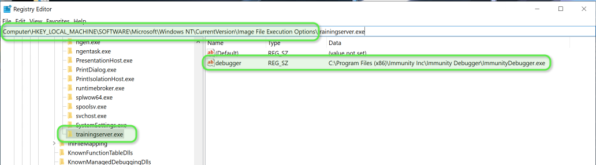

COMO AUTOMATICAMENTE ATACHAR UM PROCESSO A UM DEBUGGER.
----------------------------------------------------------------
offensive think :: artigo técnico em formato zine / nfo
----------------------------------------------------------------
titulo : Como automaticamente atachar um processo a um debugger.
autor : offensive think
data : Wed, Nov 11, 2020
tags : bof, osce, binary-exploitation
----------------------------------------------------------------
--> https://www.offensivethink.com/posts/trick-to-bof-debugger.html <--
No processo de criação de um exploit, no estudo de Buffer Overflow por exemplo, temos várias fases: fuzzing, poc, teste de badchars, etc. Isso acaba envolvendo muito trabalho repetitivo de abrir o excutável alvo, abrir o debugger e então anexar o processo.
Uma forma de agilizar um pouco é fazer com que, ao abrir o aplicativo que você deseja testar, ele seja automaticamente "atachado" ao debugger de sua preferência.
Para isso, basta fazer:
1. Criar uma nova chave com o nome exato do aplicativo, incluindo a extensão, no registro em Computer\HKEY_LOCAL_MACHINE\SOFTWARE\Microsoft\Windows NT\CurrentVersion\Image File Execution Options\
2. Dentro dessa nova chave criar uma entrada do *tipo string* de *nome debugger*.
3. O valor da entrada debugger deve ser o caminho completo, incluindo o executável, do debugger de sua preferência.
Abaixo, como fica no regedit, a criação da entrada para um aplicativo de nome trainingserver.exe que deverá ser automaticamente anexado ao Immunity Debugger, ao ser iniciado.

Agora é só iniciar o aplicativo e ele já abrirá no debugger. Só dar play e se divertir. ;D
How to: Launch the Debugger Automatically
https://docs.microsoft.com/en-us/previous-versions/visualstudio/visual-studio-2008/a329t4ed(v=vs.90)?redirectedfrom=MSDN
---[ EOF ]--------------------------------------------------------------
offensive think / 2026